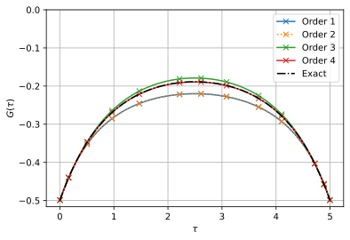
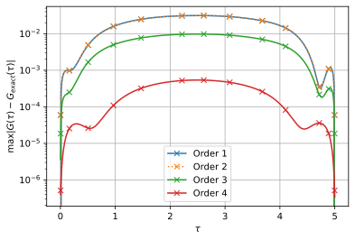

Semi-infinite chain
This tutorial shows how to setup a minimal impurity model, that of a single fermionic state, and solve it using triqs_xca. As the first example we pick the analytically solvable case of a semi-infinte chain. (By having the exact solution we will be able to see how the bold hybridization expansion converges as a function of expansion order.)
In the semi-infinite chain with nearest neighbour hopping \(t = 1\) the site with only one neighbour has a single particle Green’s function with semi-circular density of states (DOS). Thus the chain can be reformulated as an impurity problem of a single site (with zero energy) coupled to a hybridization function with semi-cicular DOS.
Initialization
First we spawn a solver instance and setting up a few general system parameters. The local Hamiltonian of the single-site is in this case trivial with a single state at zero energy \(H = 0 \cdot c^\dagger c = 0 \cdot \hat{n}\).
[2]:
from triqs.operators import n
from triqs_xca import BlockSparseSolver as Solver
S = Solver(
H_loc=0.0 * n('0',0),
beta=5.0, # Inverse temperature
gf_struct=[('0', 1)], # Green's function structure 1st index: name, 2nd index: dimension of subspace
eps=1e-8, # Accuracy of Discrete Lehmann Representation (DLR) used for imaginary time response functions
w_max=2.0, # DLR frequency cut-off (the spectrum of the model must be in the range [-w_max, +w_max]
)
Starting run with 1 MPI rank(s) at : 2026-05-19 12:36:51.952515
____ ____________ _____
\ \/ /\_ ___ \ / _ \
\ / / \ \/ / /_\ \
/ \ \ \____/ | \
/___/\ \ \______ /\____|__ /
\_/ \/ \/ [github.com/TRIQS/xca]
beta = 5.0, w_max = 2.0, eps = 1e-08, N_DLR = 13
AtomDiagReal: dim 2 with 2 subspaces dims [1] freq [2] E min/max +0.00E+00/+0.00E+00
Hybridization function
In the solver instance the hybridization function is located at S.Delta_tau and we set it to have the semi-circular shape of the semi-infinite chain.
[3]:
from triqs.gfs import make_gf_dlr_imtime, make_gf_dlr_imfreq, SemiCircular
Delta_w = make_gf_dlr_imfreq(S.Delta_tau['0'])
Delta_w << SemiCircular(2.0)
S.Delta_tau['0'] = make_gf_dlr_imtime(Delta_w)
Run solver
Finally we run the solver for a few different expansion orders.
[4]:
from h5 import HDFArchive
max_order = 4
for order in range(1, max_order+1):
S.solve(max_order=order, maxiter=20)
with HDFArchive(f'data_chain_order_{order}.h5', 'w') as A: A['S'] = S
Hybridization: using DLR expansion with N_poles = 13
iter = 1, diff_G = 1.80E-01, Z-1 = +1.78E-10, eta = 4.12E-01
iter = 2, diff_G = 7.66E-02, Z-1 = +1.89E-09, eta = 5.02E-01
iter = 3, diff_G = 1.66E-02, Z-1 = +4.52E-10, eta = 5.17E-01
iter = 4, diff_G = 2.09E-03, Z-1 = +5.23E-11, eta = 5.19E-01
iter = 5, diff_G = 1.59E-04, Z-1 = +3.64E-12, eta = 5.19E-01
iter = 6, diff_G = 8.13E-06, Z-1 = +1.72E-13, eta = 5.19E-01
Converged after 6 iterations with diff_G = 8.13E-06 < tol = 1.00E-04
Timing: incl. excl.
----------------------------------------------------
Adapol hybridization fit: 0.000 0.000 1.1% |
AtomDiag Init: 0.000 0.000 0.5% |
DiagramEvaluator Init: 0.002 0.002 14.9% |-----|
Dyson: 0.002 0.000 2.4% ||
Setup: 0.001 0.001 8.2% |--|
Solve: 0.001 0.001 7.5% |--|
Sigma: 0.001 0.000 1.0% |
Order 1: 0.001 0.001 9.9% |---|
Single-particle Gf: 0.000 0.000 0.1% |
Order 1: 0.000 0.000 0.7% |
Other: 0.007 0.007 53.9% |---------------------|
----------------------------------------------------
Total: 0.014 100.0%
AAA: Error 1.87E-01 using 1 support and 11 fitting points (step 1/12)
AAA: Error 6.48E-04 using 2 support and 9 fitting points (step 2/12)
AAA: Error 2.66E-07 using 3 support and 8 fitting points (step 3/12)
AAA: Converged after 3 steps with error 2.66E-07.
TDC: Error 6.33E-07 for 3 AAA steps (Error 6.48E-04 no opt) c.f. tol 1.00E-05.
AAA: Error 1.87E-01 using 1 support and 11 fitting points (step 1/1)
TDC: Error 1.91E-01 for 1 AAA steps (Error 7.34E-01 no opt) c.f. tol 1.00E-05.
AAA: Error 1.87E-01 using 1 support and 11 fitting points (step 1/2)
AAA: Error 6.48E-04 using 2 support and 9 fitting points (step 2/2)
TDC: Error 1.15E-03 for 2 AAA steps (Error 1.87E-01 no opt) c.f. tol 1.00E-05.
TDC: Compression finished with 3 AAA steps and error 6.33E-07.
Adapol: Fit error = 6.33E-07 < tol_adapol = 1.00E-05, N_poles = 5
iter = 1, diff_G = 8.97E-06, Z-1 = +7.13E-14, eta = 5.19E-01
Converged after 1 iterations with diff_G = 8.97E-06 < tol = 1.00E-04
Timing: incl. excl.
----------------------------------------------------
Adapol hybridization fit: 0.009 0.009 9.3% |---|
AtomDiag Init: 0.000 0.000 0.1% |
DiagramEvaluator Init: 0.002 0.002 2.1% ||
Dyson: 0.003 0.000 0.4% |
Setup: 0.001 0.001 1.1% |
Solve: 0.001 0.001 1.2% |
Sigma: 0.002 0.000 0.2% |
Order 1: 0.002 0.002 1.6% ||
Order 2: 0.000 0.000 0.2% |
Single-particle Gf: 0.001 0.000 0.0% |
Order 1: 0.000 0.000 0.2% |
Order 2: 0.001 0.001 0.5% |
Other: 0.083 0.083 83.1% |--------------------------------|
----------------------------------------------------
Total: 0.100 100.0%
AAA: Error 1.87E-01 using 1 support and 11 fitting points (step 1/12)
AAA: Error 6.48E-04 using 2 support and 9 fitting points (step 2/12)
AAA: Error 2.66E-07 using 3 support and 8 fitting points (step 3/12)
AAA: Converged after 3 steps with error 2.66E-07.
TDC: Error 6.33E-07 for 3 AAA steps (Error 6.48E-04 no opt) c.f. tol 1.00E-05.
AAA: Error 1.87E-01 using 1 support and 11 fitting points (step 1/1)
TDC: Error 1.91E-01 for 1 AAA steps (Error 7.34E-01 no opt) c.f. tol 1.00E-05.
AAA: Error 1.87E-01 using 1 support and 11 fitting points (step 1/2)
AAA: Error 6.48E-04 using 2 support and 9 fitting points (step 2/2)
TDC: Error 1.15E-03 for 2 AAA steps (Error 1.87E-01 no opt) c.f. tol 1.00E-05.
TDC: Compression finished with 3 AAA steps and error 6.33E-07.
Adapol: Fit error = 6.33E-07 < tol_adapol = 1.00E-05, N_poles = 5
iter = 1, diff_G = 1.13E-02, Z-1 = -3.56E-10, eta = 5.08E-01
iter = 2, diff_G = 1.81E-03, Z-1 = -4.16E-11, eta = 5.07E-01
iter = 3, diff_G = 1.50E-04, Z-1 = -3.00E-12, eta = 5.06E-01
iter = 4, diff_G = 8.04E-06, Z-1 = -1.46E-13, eta = 5.06E-01
Converged after 4 iterations with diff_G = 8.04E-06 < tol = 1.00E-04
Timing: incl. excl.
----------------------------------------------------
Adapol hybridization fit: 0.012 0.012 7.1% |--|
AtomDiag Init: 0.000 0.000 0.0% |
DiagramEvaluator Init: 0.002 0.002 1.2% |
Dyson: 0.005 0.001 0.5% |
Setup: 0.001 0.001 0.7% |
Solve: 0.003 0.003 1.6% ||
Sigma: 0.033 0.000 0.2% |
Order 1: 0.003 0.003 1.6% ||
Order 2: 0.002 0.002 0.9% |
Order 3: 0.029 0.029 16.8% |------|
Single-particle Gf: 0.015 0.000 0.0% |
Order 1: 0.000 0.000 0.2% |
Order 2: 0.001 0.001 0.6% |
Order 3: 0.013 0.013 7.8% |--|
Other: 0.104 0.104 60.7% |-----------------------|
----------------------------------------------------
Total: 0.172 100.0%
AAA: Error 1.87E-01 using 1 support and 11 fitting points (step 1/12)
AAA: Error 6.48E-04 using 2 support and 9 fitting points (step 2/12)
AAA: Error 2.66E-07 using 3 support and 8 fitting points (step 3/12)
AAA: Converged after 3 steps with error 2.66E-07.
TDC: Error 6.33E-07 for 3 AAA steps (Error 6.48E-04 no opt) c.f. tol 1.00E-05.
AAA: Error 1.87E-01 using 1 support and 11 fitting points (step 1/1)
TDC: Error 1.91E-01 for 1 AAA steps (Error 7.34E-01 no opt) c.f. tol 1.00E-05.
AAA: Error 1.87E-01 using 1 support and 11 fitting points (step 1/2)
AAA: Error 6.48E-04 using 2 support and 9 fitting points (step 2/2)
TDC: Error 1.15E-03 for 2 AAA steps (Error 1.87E-01 no opt) c.f. tol 1.00E-05.
TDC: Compression finished with 3 AAA steps and error 6.33E-07.
Adapol: Fit error = 6.33E-07 < tol_adapol = 1.00E-05, N_poles = 5
iter = 1, diff_G = 2.50E-03, Z-1 = +6.10E-11, eta = 5.08E-01
iter = 2, diff_G = 2.46E-04, Z-1 = +5.21E-12, eta = 5.09E-01
iter = 3, diff_G = 1.45E-05, Z-1 = +2.88E-13, eta = 5.09E-01
Converged after 3 iterations with diff_G = 1.45E-05 < tol = 1.00E-04
Timing: incl. excl.
----------------------------------------------------
Adapol hybridization fit: 0.015 0.015 1.2% |
AtomDiag Init: 0.000 0.000 0.0% |
DiagramEvaluator Init: 0.002 0.002 0.2% |
Dyson: 0.006 0.001 0.1% |
Setup: 0.001 0.001 0.1% |
Solve: 0.003 0.003 0.3% |
Sigma: 0.431 0.000 0.0% |
Order 1: 0.005 0.005 0.4% |
Order 2: 0.003 0.003 0.2% |
Order 3: 0.067 0.067 5.2% |-|
Order 4: 0.356 0.356 27.5% |----------|
Single-particle Gf: 0.716 0.000 0.0% |
Order 1: 0.000 0.000 0.0% |
Order 2: 0.002 0.002 0.1% |
Order 3: 0.027 0.027 2.1% ||
Order 4: 0.687 0.687 53.1% |--------------------|
Other: 0.124 0.124 9.6% |---|
----------------------------------------------------
Total: 1.294 100.0%
Visualization
To see the convergence with expansion order we plot the resulting single-particle Green’s function.
[5]:
from triqs.plot.mpl_interface import oplot, oplotr, oploti, plt
def plot_dlr_imtime(g_tau, label, n_tau=400, marker='x', linestyle='-', color=None):
from triqs.gfs import make_gf_imtime
g_tau_fine = make_gf_imtime(g_tau, n_tau=n_tau)
if color is None:
color = plt.plot([], [], linestyle+marker, label=label)[0].get_color()
label = None
oplotr(g_tau, marker=marker, label=None, color=color)
oplotr(g_tau_fine, label=label, color=color, linestyle=linestyle)
[6]:
import glob
filenames = np.sort(glob.glob('data_chain_order_*.h5'))
results = []
for filename in filenames:
print(f'--> Loading: {filename}')
with HDFArchive(filename, 'r') as A:
results.append(A['S'])
--> Loading: data_chain_order_1.h5
--> Loading: data_chain_order_2.h5
--> Loading: data_chain_order_3.h5
--> Loading: data_chain_order_4.h5
[7]:
for r in results:
plot_dlr_imtime(r.G_tau['0'], label=f'Order {r.max_order}',
linestyle='-' if r.max_order != 2 else ':')
delta_tau = results[0].Delta_tau['0']
plot_dlr_imtime(delta_tau, label='Exact', marker='', linestyle='-.', color='black')
plt.ylabel(r'$G(\tau)$'); plt.xlabel(r'$\tau$')
plt.legend(loc='best'); plt.grid(True); plt.ylim(top=0);

[8]:
for r in results:
diff_tau = delta_tau - r.G_tau['0']
diff_tau.data[:] = np.abs(diff_tau.data)
plot_dlr_imtime(diff_tau, label=f'Order {r.max_order}',
linestyle='-' if r.max_order != 2 else ':')
plt.semilogy([], [])
plt.legend(loc='best')
plt.ylabel(r'max$|G(\tau) - G_{exact}(\tau)|$')
plt.xlabel(r'$\tau$')
plt.grid(True)

The convergence rate with expansion order is fast and the error at order 4 is about \(10^{-3}\).